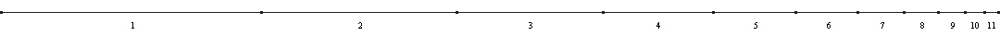
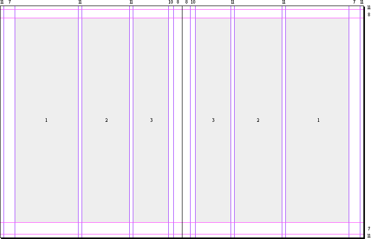
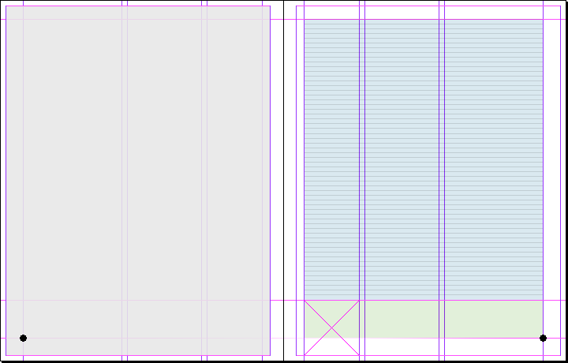
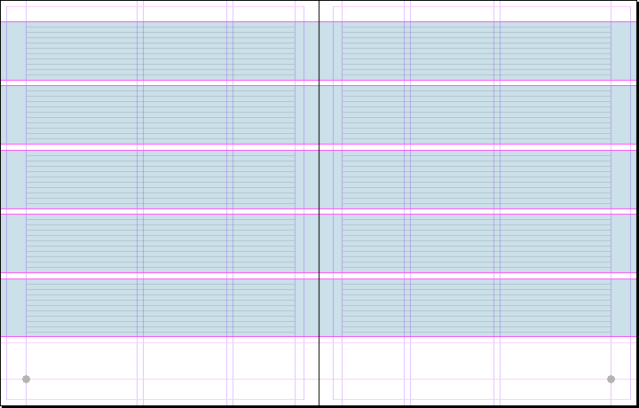
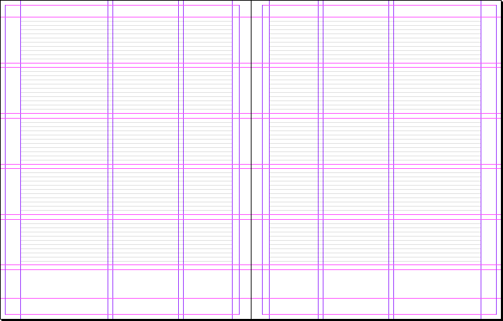

| Дизайн-студия | nfrjtdjnbvz.name |
Блог | ||||||
| Журнал «Панорама» | ||||||||
| Концепция | Модульная сетка |
Первый раздел | Второй раздел | Третий раздел | ||||
Модульная сетка основана на геометрической прогрессии. Используется числовой ряд, каждый последующий элемент которого составляет три четверти предыдущего: |
||||||||
 |
||||||||
На полученных значениях базируются направляющие, которые задают основные параметры макета страницы — внешние поля и колонки: |
||||||||
 |
||||||||
Помимо стандартных предусмотрены дополнительные узкие поля — это позволяет создавать интересные динамичные композиции, да и просто использовать больше места для изображений. |
 |
Дополнительная линия отделяет область набора от пространства, в котором располагаются колонэлементы. Фактически эту часть следует рассматривать как широкое поле, которое может оставаться свободным, а может содержать колонтитул, сноски и другую информацию. |
||||||
 |
Область набора делится на 54 строки (интерлиньяж — 11,4 пункта, в наборе используется 9-й кегль). 54 строки — это 5 групп по 10 строк и по одной строке между ними. Направляющие, образованные этими группами являются частью макета страницы — к ним привязываются границы изображений, колонки и отдельные текстовые блоки. |
|||||||
 |
Такая модульная сетка получается в итоге. |
|||||||
| © Е. Арутюнов, 2007—2011 gjxnf@nfrjtdjnbvz.name |
||||||||